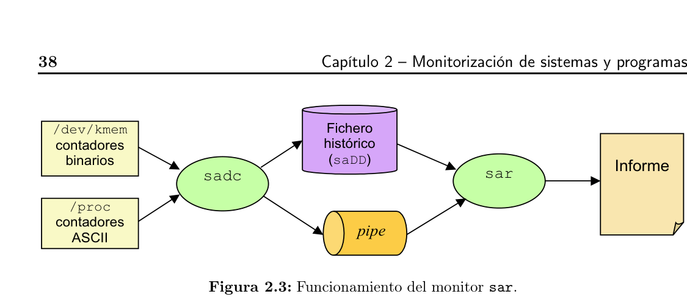
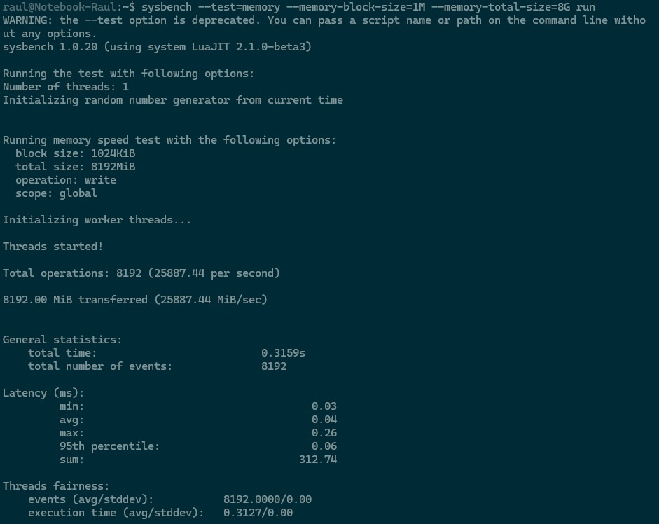

Compendio académico exhaustivo y riguroso que cubre el 100% del programa analítico de la Unidad 5 (Subsistema de Seguimiento/Control de RRHH y SI/TI). Integra la totalidad de definiciones, modelos matemáticos con KaTeX, demostraciones de leyes operacionales, tablas de análisis de sesgos, esquemas de telemetría y las figuras originales de los textos oficiales: Idalberto Chiavenato (5ta Ed.) y Xavier Molero et al. (2004).
En el marco teórico formulado por Idalberto Chiavenato (2005), la Administración de Recursos Humanos (ARH) es un sistema abierto integrado por cinco subsistemas interdependientes: 1) Provisión (Admisión), 2) Aplicación (Organización), 3) Mantenimiento (Retención), 4) Desarrollo (Capacitación) y 5) Seguimiento y Control (Monitoreo).
El Subsistema de Control o Seguimiento es el mecanismo que cierra el circuito sistémico. Desde la perspectiva de la cibernética organizacional, el control no debe entenderse como un acto policial, punitivo o coercitivo de fiscalización, sino como un proceso autorregulador de realimentación (feedback) continuo. Su finalidad primordial es monitorear el comportamiento real de los recursos humanos, confrontarlo con los planes y estándares estratégicos, detectar desviaciones a tiempo e implementar ajustes proactivos para mantener a la organización en su rumbo hacia el cumplimiento de su misión.
El control del factor humano opera en tres niveles jerárquicos complementarios dentro de las organizaciones de sistemas y tecnología:
Todo sistema de control profesional y metódico se desarrolla a través de cuatro etapas consecutivas e interconectadas en un bucle cerrado:

top / htop: Monitor interactivo de CPU, memoria y procesos en tiempo real.vmstat: Informa sobre procesos en cola de CPU (r, b), memoria virtual activa/inactiva, tasa de swapping (si, so) e interrupciones.iostat: Monitorea la tasa de transferencia y utilización ($U\%$) de los discos de almacenamiento.sar (System Activity Reporter): El monitor histórico más potente de Linux. Se divide en el recolector en segundo plano (sadc) que guarda las métricas en /var/log/sa/saXX y el visor analítico (sar).Es indispensable distinguir dos términos que suelen confundirse en los exámenes:
En el Trabajo Práctico N° 5.2 de la cátedra se analiza la curva de SysBench para transferencia de memoria en función del tamaño de bloque (Block Size):
